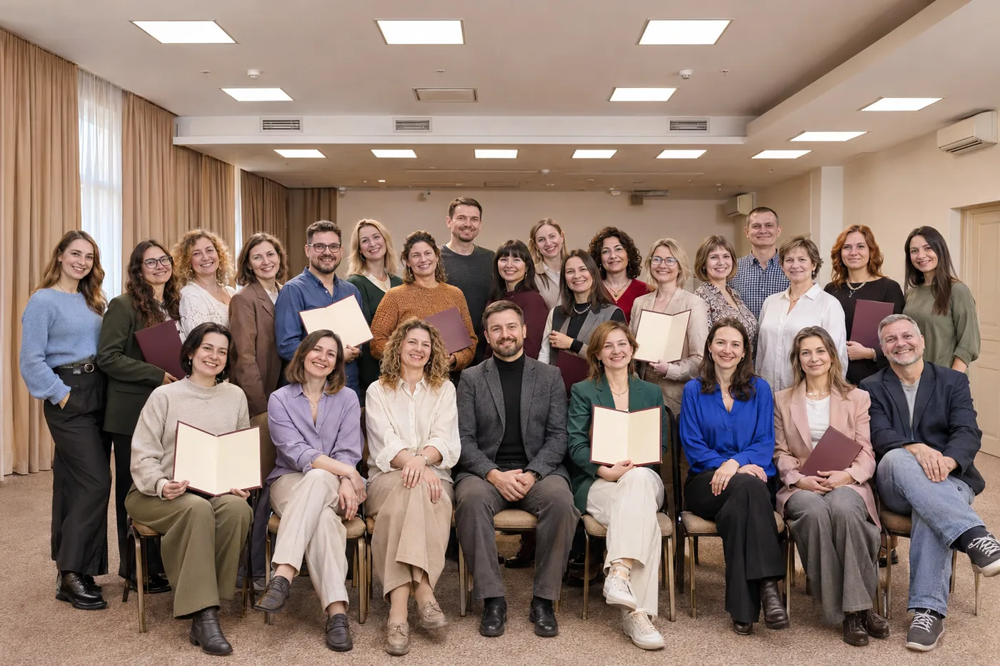

Врачебный подход
Программы создаёт врач-психиатр, психотерапевт. Образование: Московская медицинская академия им. И.М. Сеченова, НМИЦ психиатрии и наркологии им. В.П. Сербского, РУДН.
Врач-психиатр, психотерапевт
Обучение, практикумы и консультации по методам КПТ (когнитивно-поведенческая терапия) и EMDR (ДПДГ) 3.0 для себя и для специалистов.
25–28 ноября · онлайн-практикум «Новая реальность» · участие 0 ₽
Анна Сабаврач-психиатр, психотерапевт
О школе
Практикумы, программы, клуб, консультации и бесплатные материалы для всех, кто хочет убрать тревогу и выйти из повторяющихся сценариев.
Программы школы → Институт · ООООбучение для психологов, врачей и людей с высшим образованием: диплом о переподготовке и удостоверение о повышении квалификации.
Программы института →Почему выбирают


Программы создаёт врач-психиатр, психотерапевт. Образование: Московская медицинская академия им. И.М. Сеченова, НМИЦ психиатрии и наркологии им. В.П. Сербского, РУДН.
КПТ находит мишень → EMDR (ДПДГ) убирает реакцию → результат закрепляется.
Большинство программ проходят онлайн. Терапевтическая группа и родовая расстановка проходят офлайн.
Бесплатно
Начните знакомство со школой с бесплатного шага.
25–28 ноября, онлайн
Как за 4 дня выйти из угнетающих чувств на новый уровень дохода, энергии, отношений, реализации
9 шагов, онлайн
В конце теста вы бесплатно получите индивидуальную расшифровку и шаги к выходу в новую реальность.
онлайн или на бумаге
Определите свой тип личности и поймите, какие сценарии повторяются в отношениях, работе и реакциях на стресс.
3 видео в Telegram
Три коротких видео и практика для нервной системы.
3 дня, онлайн
Обычная цена 4 990 ₽. По промокоду РЕЗУЛЬТАТ участие 0 ₽.

Обучение
Как за 4 дня выйти из угнетающих чувств на новый уровень дохода, энергии, отношений, реализации
Подробнее →За 1 месяц: КПТ находит мишень → EMDR (ДПДГ) убирает реакцию → результат закрепляется
Подробнее →Как за 5 дней освоить EMDR (ДПДГ) 3.0 – метод, который убирает травму за 1–2 сеанса
Подробнее →Новая профессия за 6 месяцев – психолог краткосрочной терапии ДПДГ
Подробнее →Клуб «Волшебный пендэль» – это ежемесячная поддержка от врача-психиатра Анны Саба
Подробнее →Отзывы
Раздел готовится: здесь будут настоящие отзывы учеников с их согласия.
Блог